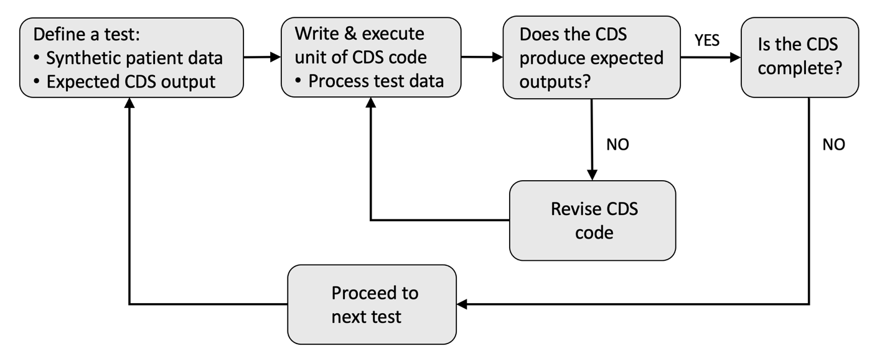
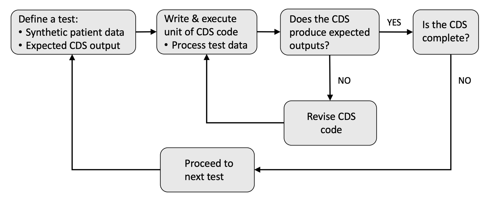

http://cancerscreeningcds.github.io/bcsm-cds/CodeSystem/biopsy-result-observation-code-system
http://cancerscreeningcds.github.io/bcsm-cds/CodeSystem/plan-definition-action-code-system
http://cancerscreeningcds.github.io/bcsm-cds/CodeSystem/recommendation-flag-code-system
http://cancerscreeningcds.github.io/bcsm-cds/CodeSystem/screening-observation-code-system
http://www.ama-assn.org/go/cpt
| Type | Reference | Content |
|---|---|---|
| web | www.mitre.org | MITRE: https://www.mitre.org/ |
| web | browser.ihtsdotools.org | http://snomed.info/sct |
| web | www.mitre.org |
IG © 2025+ MITRE
. Package cancerscreeningcds.fhir.us.bcsm-cds#1.0.0 based on FHIR 4.0.1
. Generated 2025-02-28
Links: Table of Contents | QA Report |
| web | jamanetwork.com | https://jamanetwork.com/journals/jama/fullarticle/2463262 |
| web | www.uspreventiveservicestaskforce.org | https://www.uspreventiveservicestaskforce.org/uspstf/recommendation/breast-cancer-screening |
| web | www.cancer.org | https://www.cancer.org/cancer/types/breast-cancer/screening-tests-and-early-detection/american-cancer-society-recommendations-for-the-early-detection-of-breast-cancer.html |
| web | acsjournals.onlinelibrary.wiley.com | https://acsjournals.onlinelibrary.wiley.com/doi/full/10.3322/canjclin.57.2.75 |
| web | www.breastsurgeons.org | https://www.breastsurgeons.org/docs/statements/asbrs-rg-high-risk-lesions.pdf |
| web | www.breastsurgeons.org | https://www.breastsurgeons.org/docs/statements/asbrs-rg-excisional-breast-biopsy.pdf |
| web | edge.sitecorecloud.io | https://edge.sitecorecloud.io/americancoldf5f-acrorgf92a-productioncb02-3650/media/ACR/Files/RADS/BI-RADS/Mammography-Reporting.pdf |
| web | edge.sitecorecloud.io | https://edge.sitecorecloud.io/americancoldf5f-acrorgf92a-productioncb02-3650/media/ACR/Files/RADS/BI-RADS/Breast-MRI-Reporting.pdf |
| web | edge.sitecorecloud.io | https://edge.sitecorecloud.io/americancoldf5f-acrorgf92a-productioncb02-3650/media/ACR/Files/RADS/BI-RADS/Breast-Ultrasound-Reporting.pdf |
| web | www.uspreventiveservicestaskforce.org | https://www.uspreventiveservicestaskforce.org/uspstf/recommendation/brca-related-cancer-risk-assessment-genetic-counseling-and-genetic-testing |
| web | www.uspreventiveservicestaskforce.org | https://www.uspreventiveservicestaskforce.org/uspstf/recommendation/breast-cancer-medications-for-risk-reduction |
| web | tools.bcsc-scc.ucdavis.edu | https://tools.bcsc-scc.ucdavis.edu/BC5yearRisk |
| web | www.jacr.org | https://www.jacr.org/article/S1546-1440(21)00730-4/fulltext |
| web | transcare.ucsf.edu | https://transcare.ucsf.edu/guidelines/breast-cancer-women |
| web | cancerscreeningcds.github.io | See here for logic path L2 representation. |
| web | cancerscreeningcds.github.io | See here for logic path L2 representation. |
| web | cancerscreeningcds.github.io | See here for logic path L2 representation. |
| web | cancerscreeningcds.github.io | See here for logic path L2 representation. |
| web | cancerscreeningcds.github.io | See here for logic path L2 representation. |
| web | smarthealthit.org | The Sustainable Medical Applications, Reusable Technologies (SMART ® ) standard facilitates the integration of software applications, or "apps," with health IT systems. "SMART on FHIR apps," or sometimes simply "SMART apps," are software applications that securely interact with patient EHRs and other healthcare-related data via a FHIR API. SMART apps are interoperable in the sense that they can interface with any health IT system that supports the SMART standard and the data requirements of the app. Instead of writing a separate software application to provide the same capability for each different health IT system, a single application can be written that works with many different health IT systems. |
| web | cds-hooks.org | The CDS Hooks standard describes how CDS services, which are simply software that provide CDS, can be integrated with health IT systems. While SMART is more general in nature, CDS Hooks focuses on integrating CDS into the clinician workflow. This is accomplished through the use of a number of so-called "hooks," which is a software term for a technique for altering the behavior of a software program. CDS Hooks focuses on how CDS recommendations can be sent to a health IT system via informational "cards." In contrast with SMART, a CDS Hooks integration would typically assume that some other system ( e.g. , the health IT system) would be responsible for displaying the information in these cards to the clinician. This distinction is discussed further in the next section. |
| web | en.wikipedia.org | The CDS Hooks standard describes how CDS services, which are simply software that provide CDS, can be integrated with health IT systems. While SMART is more general in nature, CDS Hooks focuses on integrating CDS into the clinician workflow. This is accomplished through the use of a number of so-called "hooks," which is a software term for a technique for altering the behavior of a software program. CDS Hooks focuses on how CDS recommendations can be sent to a health IT system via informational "cards." In contrast with SMART, a CDS Hooks integration would typically assume that some other system ( e.g. , the health IT system) would be responsible for displaying the information in these cards to the clinician. This distinction is discussed further in the next section. |
| web | www.uspreventiveservicestaskforce.org | USPSTF United States Preventive Services Task Force, "Breast Cancer: Screening," 11 January 2016. [Online]. Available: https://www.uspreventiveservicestaskforce.org/uspstf/recommendation/breast-cancer-screening . |
| web | www.uspreventiveservicestaskforce.org | USPSTF United States Preventive Services Task Force, "Colorectal Cancer: Screening," 18 May 2021. [Online]. Available: https://www.uspreventiveservicestaskforce.org/uspstf/recommendation/colorectal-cancer-screening |
| web | www.uspreventiveservicestaskforce.org | 2024 U.S. Preventive Services Task Force Recommendation Statement: Screening for Breast Cancer |
| web | www.acog.org | American College of Obstetricians and Gynecologists (ACOG): Practice Bulletin on Breast Cancer Risk Assessment and Screening in Average-Risk Women |
| web | jamanetwork.com | American Cancer Society (ACS): Guideline on Breast Cancer Screening for Women at Average Risk, Update |
| web | www.nccn.org | NCCN Guidelines: Breast Cancer Screening and Diagnosis, Version 2.2023 |
| web | acsearch.acr.org | ACR: ACR Appropriateness Criteria on Breast Cancer Screening |
| web | www.uspreventiveservicestaskforce.org | U.S. Preventive Services Task Force (USPSTF): Final Recommendation Statement on BRCA-Related Cancer: Risk Assessment, Genetic Counseling, and Genetic Testing |
| web | www.uspreventiveservicestaskforce.org | USPSTF Recommendation: Breast Cancer: Medication Use to Reduce Risk |
| web | acsjournals.onlinelibrary.wiley.com | American Cancer Society Guidelines for Breast Screening with MRI as an Adjunct to Mammography |
| web | www.cancer.org | ACS Breast Cancer Screening Guidelines |
| web | www.acog.org | American College of Obstetricians and Gynecologists (ACOG): Practice Bulletin on Hereditary Cancer Syndromes and Risk Assessment |
| web | www.nccn.org | NCCN Guidelines: Breast Cancer Risk Reduction, Version 2.2024 |
| web | www.nccn.org | NCCN Guidelines: Genetic/Familial High-Risk Assessment: Breast, Ovarian, and Pancreatic, Version 3.2024 |
| web | www.breastsurgeons.org | The American Society of Breast Surgeons Resource Guide: Excisional breast biopsy (November 2014) |
| web | www.breastsurgeons.org | The American Society of Breast Surgeons Resource Guide: Surgical Management of Benign or High-Risk Lesions (Feb 2025) |
| web | cancerscreeningcds.github.io | The CDS L2 documentation for breast cancer guidelines can be found at this location: Introduction | CDC Breast Cancer Screening CDS L2 |
| web | www.apache.org | The L3 CDS definitions have been released under an Apache 2.0 open-source license and are available in this repository. The Apache 2.0 license was chosen for the L3 CDS because it is generally considered to be permissive and friendly to commercial reuse of the software being licensed. Releasing the L3 CDS definitions under an Apache 2.0 license means that it can be freely incorporated into other software and systems, which can in turn be redistributed to others without permission from the L3 CDS authors. Conditions of the Apache 2.0 license include attribution requirements and lack of liability and/or warranty. |
| web | github.com | Recall from Section 3.3.1.4 that the human readable version of CQL must be converted or translated to the computer friendly format (i.e., ELM) before it can be used as a part of CDS software. The CQL-to-ELM Translator Reference Implementation is an open source software package written in the Java programming language. It has been used to translate the BCSM CDS CQL, which as a by-product checks the CQL for conformance to the CQL specification. As with the FHIR Validator, this tool checks to make sure what has been written is, from a software standpoint, "grammatically correct." It does not provide any insight into whether the CQL code, as written, correctly implements the intended CDS logic. |
| web | github.com | Once CQL code has been translated into a computer friendly format, it additionally needs software to "execute" or "run" the result in the context of a patient's electronic health record. Executing CQL in this way is necessary to support both Unit and End-to-End Testing. Multiple open-source CQL "execution engines" exist; the BCSM CDS has been unit tested using the CQL Execution Framework Reference Implementation, a software library written in the JavaScript programming language. Additional JavaScript libraries are used to help interface with FHIR data and to handle clinical codes and value sets . For End-to-End Testing, an asynchronous library called CQL Workers is used for computational speed reasons. |
| web | github.com | Once CQL code has been translated into a computer friendly format, it additionally needs software to "execute" or "run" the result in the context of a patient's electronic health record. Executing CQL in this way is necessary to support both Unit and End-to-End Testing. Multiple open-source CQL "execution engines" exist; the BCSM CDS has been unit tested using the CQL Execution Framework Reference Implementation, a software library written in the JavaScript programming language. Additional JavaScript libraries are used to help interface with FHIR data and to handle clinical codes and value sets . For End-to-End Testing, an asynchronous library called CQL Workers is used for computational speed reasons. |
| web | github.com | Once CQL code has been translated into a computer friendly format, it additionally needs software to "execute" or "run" the result in the context of a patient's electronic health record. Executing CQL in this way is necessary to support both Unit and End-to-End Testing. Multiple open-source CQL "execution engines" exist; the BCSM CDS has been unit tested using the CQL Execution Framework Reference Implementation, a software library written in the JavaScript programming language. Additional JavaScript libraries are used to help interface with FHIR data and to handle clinical codes and value sets . For End-to-End Testing, an asynchronous library called CQL Workers is used for computational speed reasons. |
| web | github.com | Once CQL code has been translated into a computer friendly format, it additionally needs software to "execute" or "run" the result in the context of a patient's electronic health record. Executing CQL in this way is necessary to support both Unit and End-to-End Testing. Multiple open-source CQL "execution engines" exist; the BCSM CDS has been unit tested using the CQL Execution Framework Reference Implementation, a software library written in the JavaScript programming language. Additional JavaScript libraries are used to help interface with FHIR data and to handle clinical codes and value sets . For End-to-End Testing, an asynchronous library called CQL Workers is used for computational speed reasons. |
| web | github.com | The CQL Testing Framework is a JavaScript software library that facilitates Unit Testing of CQL code. While leveraging the CQL Execution Framework Reference Implementation, it provides a convenient short-hand notation for defining test cases. The CQL Testing Framework also automates the process of running the test cases, which greatly increases the efficiency of TDD of CDS. All Unit Tests were developed through the use of the CQL Testing Framework. The complete specifications for all test cases were released under an open-source license. |
| web | synthetichealth.github.io | While the CQL Testing Framework allows simple test cases to be easily defined, it is less well suited for defining large numbers of test cases or complex test cases. Synthea is a mature open source tool for simulating large amounts of synthetic health record data. It has the option of outputting data as FHIR resources, which makes it suitable for use with testing interoperable CDS. For Synthea to be able to generate suitable BCSM data, a breast cancer "disease module" must first be defined. A Synthea disease module is a directed graph that defines what types of health data must be simulated and the dependencies or constraints placed on that data. |
| web | synthetichealth.github.io | While the CQL Testing Framework allows simple test cases to be easily defined, it is less well suited for defining large numbers of test cases or complex test cases. Synthea is a mature open source tool for simulating large amounts of synthetic health record data. It has the option of outputting data as FHIR resources, which makes it suitable for use with testing interoperable CDS. For Synthea to be able to generate suitable BCSM data, a breast cancer "disease module" must first be defined. A Synthea disease module is a directed graph that defines what types of health data must be simulated and the dependencies or constraints placed on that data. |
| web | github.com | "Encender" is a software library written in the JavaScript programming language that implements the FHIR $apply operation. It has been developed for the specific purpose of testing the BCSM CDS but is also general in that it can be used with other CDS. The name "Encender," which is also the Spanish word for "to light or turn on," was chosen because the software allows FHIR resources representing CDS to be applied to a specific patient's electronic health data. As shown in Figure 2 and discussed in Section 3.3.4 , the output from the FHIR $apply operation, and thus the Encender library, includes the CDS recommended actions for a specific patient. This makes Encender a critical tool for End-to-End Testing; it uses the CQL Workers library for CQL code execution. Encender has been released as open source software. |
|
highlevelbreast.png
|
|
image2.png
|
|
image3.png
|
|
image4.png  |
|
image5.png
|